Photos
 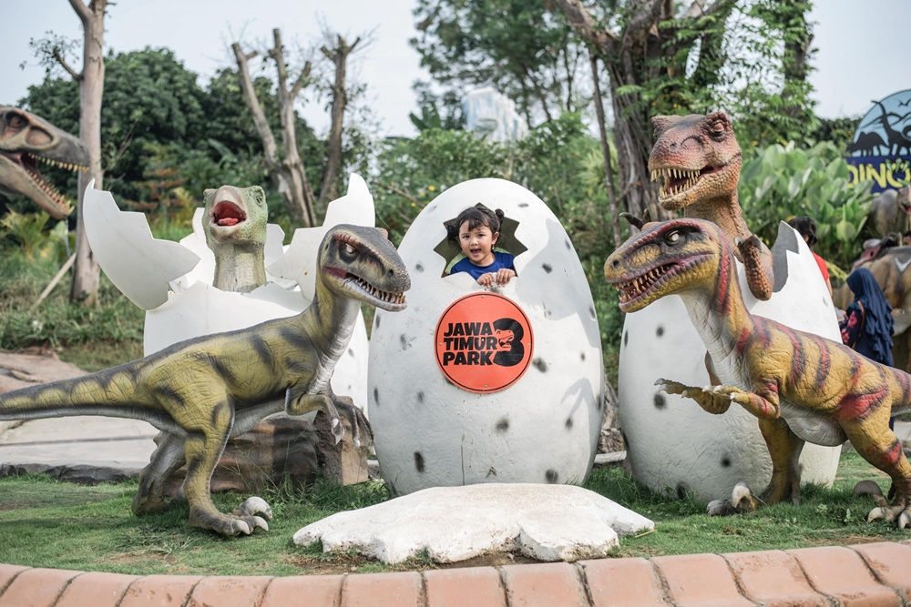
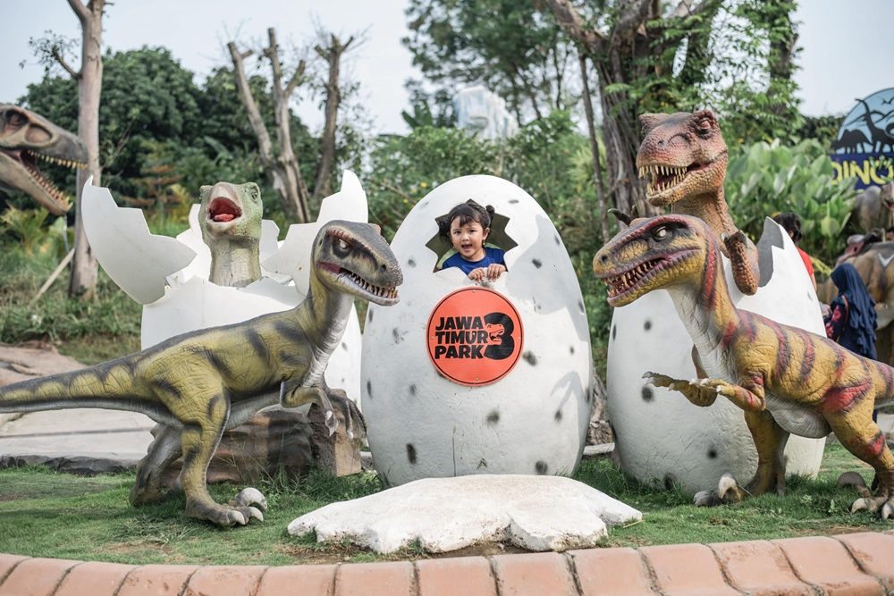

Experience the thrill of East Java's premier theme park!
Jatim Park 1 terletak di:
Jl. Kartika No.2, Sisir, Kec. Batu, Kota Batu, Jawa Timur 65315, Indonesia
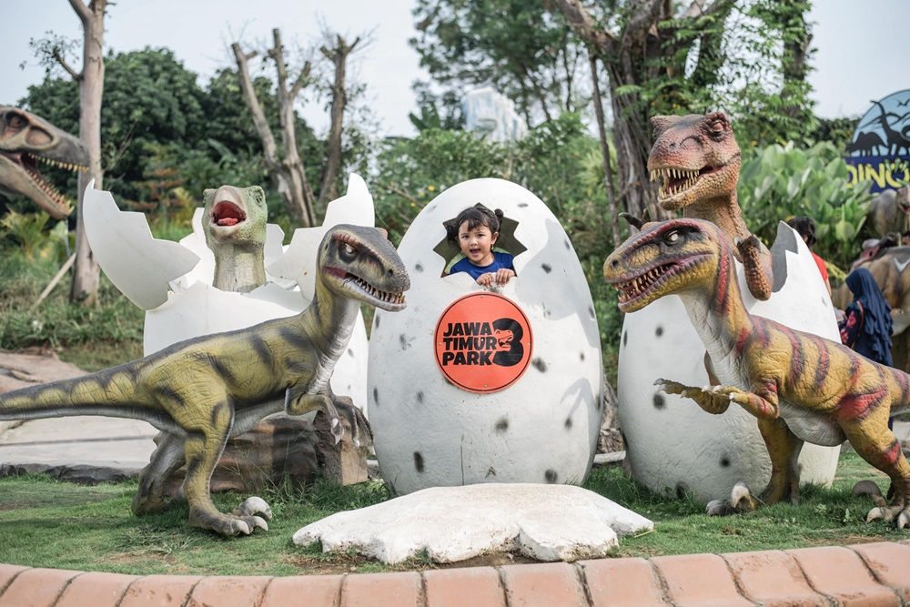
Jatim Park 1 adalah taman hiburan kelas dunia di Batu, Jawa Timur, Indonesia, yang menawarkan perpaduan unik antara petualangan, pendidikan, dan hiburan. Didirikan pada tahun 2001, taman ini memiliki museum, taman, wahana yang menegangkan, dan pameran interaktif untuk pengunjung segala usia. Jelajahi satwa liar, dinosaurus, dan pemandangan indah dalam satu destinasi yang menarik.
Jatim Park 1 buka setiap hari jam 8 pagi sampai jam 5 sore, silahkan periksa untuk hari libur nasional dan sejenisnya
 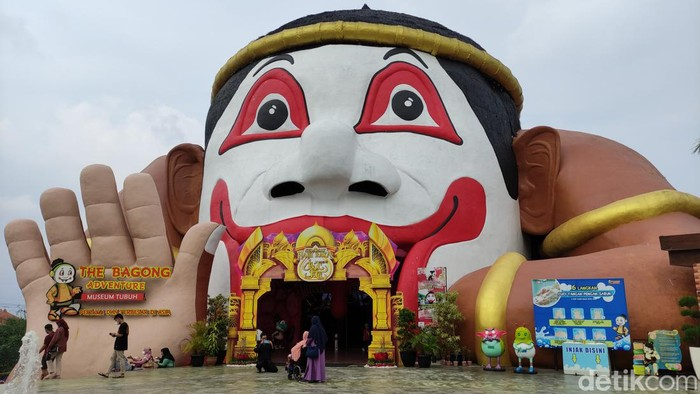
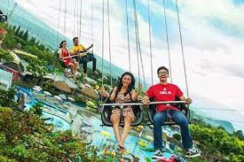
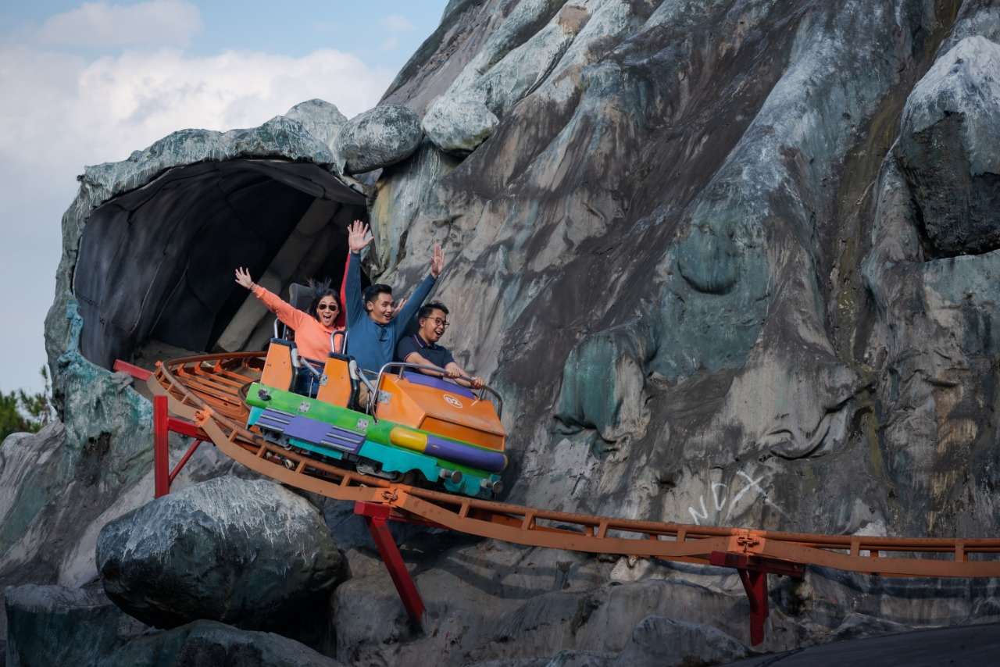
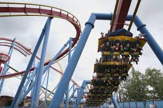
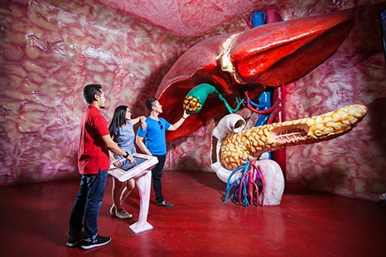
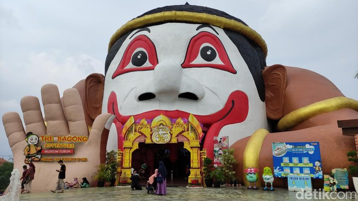
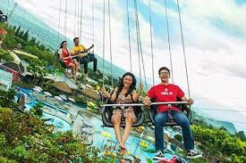
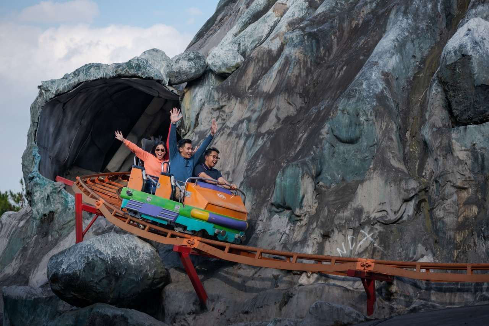
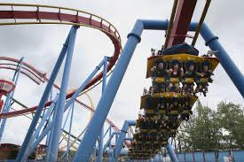
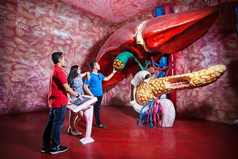
No. Telepon: +6281131150077
Email: info@jatimpark1.com
Website: www.jatimpark1.com